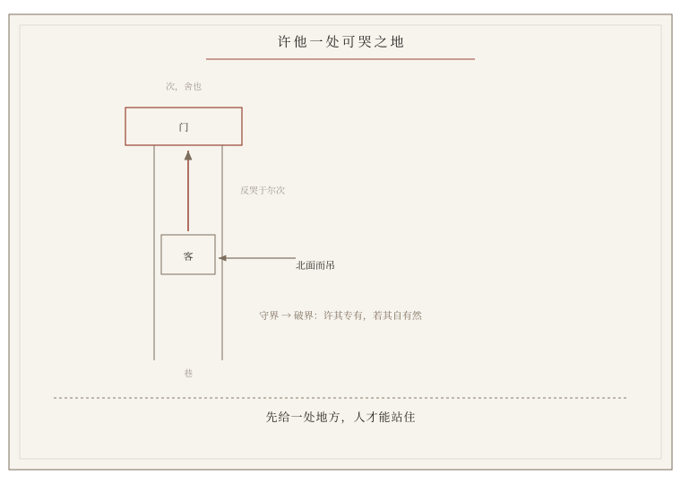

檀弓上 · 三·七十三 · 第 276 课
曾子與客立於門側，其徒趨而出。曾子曰：「爾將何之？」曰：「吾父死，將出哭於巷。」曰：「反哭於爾次。」曾子北面而弔焉。
说什么事：曾子与客站在门旁，客的随从急急往外走。曾子问他要去哪里，答说父亲死了，要到巷子里去哭。曾子说：回到你的住处去哭。然后曾子面朝北吊唁他。
落在哪一层：礼制的具体处置，兼及礼意。论「凶不可发于人之馆」，与「主人许之如其自有」。
为何编在此位：上节一句极简，此节一段极细。由一餐饭到一场吊，皆是「于有丧者之侧」的具体做法。
【经】曾子與客立於門側，其徒趨而出。曾子曰：「爾將何之？」曰：「吾父死，將出哭於巷。」曰：「反哭於爾次。」曾子北面而弔焉。
【注】徒，謂客之旅。以為不可發凶於人之館。次，舍也。禮：館人使專之，若其自有然。
【疏】此一节论馆客使如其己有之事。「反哭于尔次」者，于时立曾子之门，故曾许其反哭于汝次舍之处。依礼，丧主西面，曾子所以北面吊者，案《士丧礼》主人西面，其宾亦在东门北面，谓同国之宾；曾子既许其哭于次，故以同国宾礼北面吊焉。
门侧 门旁。曾子之家门。
其徒 客的随从。注「徒，谓客之旅」——旅，行旅之人。
趋而出 快步往外走。趋，疾行，是行礼时的步法，此处见其急。
何之 到哪里去。之，往。
出哭于巷 到巷中哭。不欲在人馆中发丧，故出至巷。
次 住处、馆舍。注「次，舍也」。
专之 使之专有，即把这处馆舍全权当自己的地方用。
北面而吊 面朝北吊唁。依礼宾在东门北面，是「同国之宾」的位。
曾子与一位客站在门旁，客的随从快步往外走。曾子问：「你要到哪里去？」答：「我父亲死了，我要到巷子里去哭。」曾子说：「回到你的住处去哭。」于是曾子面朝北，吊唁了他。
此节记一件事，三层处置，每层都有一个「不」。
第一层是客的随从之「不」：不可发凶于人之馆。父亲死在异乡，人在别人家里做客，丧气不能带进主人的门，所以要趋出到巷子里去哭。这一层是客人自守的分寸。
第二层是曾子之「不」：不许他出去。曾子说「反哭于尔次」——回你的住处哭。这一句把「不」变成了「许」：你不必到巷子里去，你住的那间屋，就当是你自己的。
第三层是曾子之「再进」：不只许他哭，还以同国之宾的礼吊他。疏据《士丧礼》辨其位：丧主西面，宾在东门北面，此是同国之宾的位。曾子把他当同国之人待了。
第一层 凶不出门的分寸 「不可发凶于人之馆」，是做客的礼。客居人家，主人家有主人家的事；把丧气带进来，是以己之变扰人之常。所以宁可到巷子里去。这一层看着是委屈自己，实则是守住了主客之界。
第二层 注里那五个字最重 注曰「礼：馆人使专之，若其自有然」——礼，主人使客人专有那间馆舍，就像是他自己的一样。这句话把「借住」变成了「有」。曾子许他「反哭于尔次」，依据正是这五个字。
礼在这里做了一件极不容易的事：它让一个寄居者在别人家里，有一处可以正当发丧的地方。不是施舍一间屋，是承认那间屋归他。
第三层 从「许其哭」到「吊其人」 许他哭，只是给地方；北面而吊，是认他的丧为自己的丧。疏把这一层说得极实：正因为曾子已许他哭于次，所以才用同国之宾的礼来吊——若仍视他为客，就该用待客之礼，不必吊。
礼的层级就是这样叠上去的：先守界（客不出凶），再破界（主人许其专有），再越界（主人以同国宾吊之）。三步走完，一个在异乡死了父亲的人，才算有了一个可以站的地方。
第四层 曾子问话的分量 「尔将何之」——你要到哪里去。这一问不是拦阻，是先看见。看见一个人急急往外走，先问一句，才知道他父亲死了。此节最动人的地方在这一问：若不是这一问，那人就去巷子里哭了，礼也就到此为止。
与今日何干 今人遇人遭变，多的是「节哀」「有事说话」。此节给的是另一套做法：先问一句你要去哪儿，再给他一处地方，最后站到他的位上去陪他。三步都不费钱，都要用心。
| 左 | 右 |
|---|---|
| 徒趋而出 | 急，将发丧 |
| 出哭于巷 | 不可发凶于人之馆 |
| 反哭于尔次 | 许其专有 |
| 次，舍也 | 暂居之所 |
| 馆人使专之 | 若其自有然 |
| 北面而吊 | 同国之宾之位 |
| 先问「何之」 | 先看见，后处置 |
| 守界→破界→越界 | 三步而后有其地 |
画一座宅院的门，视点平。门扇半开，门前立着两位深衣男子（一正一侧，皆不画人面细节）；门内侧，一位短衣随从正快步向外（身形微微前倾、衣裾扬起）；门外远处的巷口，一条空巷向内延伸，巷中无人。画面左下，一扇小窗上贴着素色窗纸，窗内隐约可见一张空榻。不写文字。赭色只用在门框下槛的一段与那扇小窗的窗棂。
